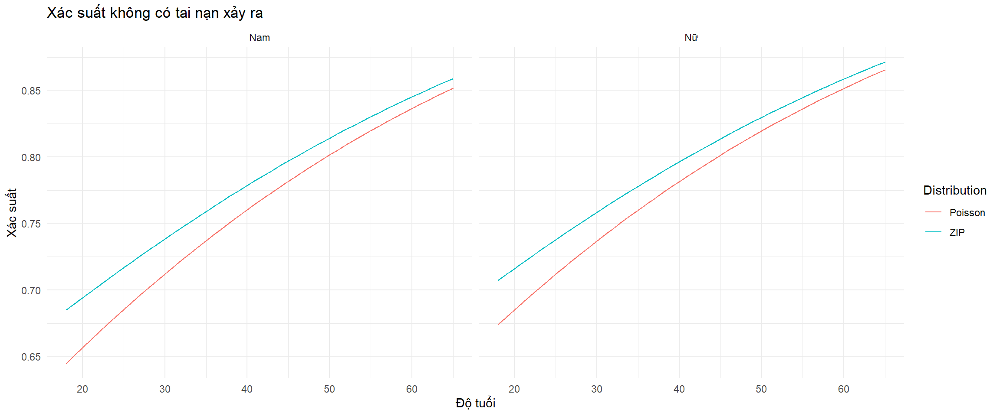

Chương 1 Mô hình hồi quy tuyến tính tổng quát.
Mô hình tuyến tính tổng quát (Generalized Linear Model hay GLM) được sử dụng rộng rãi trong các doanh nghiệp, các cơ quan tổ chức hoạt động trong lĩnh vực tài chính, ngân hàng, và bảo hiểm. Các chuyên gia quản trị rủi ro trong các ngân hàng sử dụng GLM để chấm điểm tín dụng khách hàng và quyết định phê duyệt tín dụng. Các chuyên gia tính toán thường xuyên sử dụng mô hình GLM để xác định phí thuần trong bảo hiểm cá nhân, để xác định dự phòng nghiệp vụ, hoặc để phân loại rủi ro mà công ty phải đối mặt. Khái niệm GLM lần đầu tiên được sử dụng trong nghiên cứu của Nelder và Wedderburn (1972) và từ đó đến nay đã có nhiều sách tham khảo tin cậy cho mô hình này như sdafsdfds(xxxxxxxx), sdfdsf(xxxxxxxxxx). Đa số các tài liệu tham khảo giới thiệu GLM dưới góc độ toán học và mang nhiều tính lý thuyết. Chương sách này sẽ cố gắng giải thích và tiếp cận GLM từ một góc nhìn mang tính thực hành nhiều hơn. Chúng tôi sẽ không quá đi sâu vào các khía cạnh như giả thiết, các phương pháp ước lượng của mô hình GLM, mà sẽ tập trung vào hướng dẫn bạn đọc sử dụng GLM trên nhiều dữ liệu cụ thể.
Mô hình tuyến tính tổng quát được phát biểu dưới dạng công thức như sau \[\begin{align} & Y \sim \mathcal{F}_{\theta} \\ & \mathbb{E}(Y|\textbf{X} = \textbf{x}_i) = \mu_i \\ & \mu_i = g^{-1}\left(\beta_0 + \beta_1 \cdot x_{1,i} + \beta_2 \cdot x_{2,i} + \cdots + \beta_p \cdot x_{p,i} \right) \tag{1.1} \end{align}\] trong đó \(Y\) là biến mục tiêu, \(\mathcal{F}_{\theta}\) là một phân phối xác suất có tham số là \(\theta\). Giá trị trung bình của biến mục tiêu \(Y\) phụ thuộc vào giá trị của (các) biến độc lập như sau: với điều kiện véc-tơ biến độc lập \((X_1, X_2, \cdots, X_p)\) nhận giá trị \((x_{1,i}, x_{2,i}, \cdots, x_{p,i})\), giá trị trung bình của \(Y\) được tính bằng một hàm số (hàm \(g^{-1}\)) của một tổ hợp tuyến tính của các giá trị \((x_{1,i}, x_{2,i}, \cdots, x_{p,i})\).
Thay vì cố gắng hiểu các khái niệm toán học ở trên, bạn đọc hãy thử áp dụng trong một trường hợp cụ thể. Chúng ta sẽ xây dựng một mô hình tuyến tính tổng quát mà trong đó biến mục tiêu \(Y\) cho biết người mua bảo hiểm xe máy có lựa chọn đầy đủ các quyền lợi bảo hiểm ngoài bảo hiểm trách nhiệm dân sự bắt buộc hay không không lựa chọn. Dữ liệu được sử dụng có tên là \(MotoInsurance\). Dữ liệu có 6 biến độc lập là 1. độ tuổi (\(age\)), 2. kinh nghiệm lái xe (seniority), 3. giới tính (\(sex\)), 4. thành thị (\(urban\)), 5. loại hình đăng ký xe (private), và 6. tính trạng hôn nhân (marital). Để đơn giản chúng tôi chọn hai biến độc lập để xây dựng mô hình là \(age\) và \(sex\). Mô hình tuyến tính tổng quát sẽ được sử dụng để đánh giá tác động của \(age\) và \(sex\) lên \(Y\). Lưu ý rằng biến \(age\) là một biến kiểu số, trong khi \(sex\) nhận hai giá trị là 1 tương ứng với nam và 0 tương ứng với nữ (nữ).
Hàm số dùng để xây dựng và ước lượng mô hình tuyến tính tổng quát là hàm glm() của thư viện \(stat\). Mô hình GLM được xây dựng và ước lượng chỉ bằng một dòng lệnh!
dat<-read.csv("C:/Users/AD/Desktop/Tex file/Thu latex/Introduction to R Act 60/Datasets/MotoInsurance.csv")
dat$Y<-as.factor(dat$Y)
dat$sex<-as.factor(dat$sex)
glm1<-glm(Y ~ age + sex, data=dat,
family = binomial(link = "probit")) # khai báo hàm g
summary(glm1)##
## Call:
## glm(formula = Y ~ age + sex, family = binomial(link = "probit"),
## data = dat)
##
## Deviance Residuals:
## Min 1Q Median 3Q Max
## -1.4495 -0.9278 -0.7382 1.2584 2.0391
##
## Coefficients:
## Estimate Std. Error z value Pr(>|z|)
## (Intercept) 0.678644 0.079138 8.575 <2e-16 ***
## age -0.016257 0.001619 -10.041 <2e-16 ***
## sexM -0.446783 0.047421 -9.422 <2e-16 ***
## ---
## Signif. codes: 0 '***' 0.001 '**' 0.01 '*' 0.05 '.' 0.1 ' ' 1
##
## (Dispersion parameter for binomial family taken to be 1)
##
## Null deviance: 5163.3 on 3999 degrees of freedom
## Residual deviance: 4933.9 on 3997 degrees of freedom
## AIC: 4939.9
##
## Number of Fisher Scoring iterations: 4Chúng ta có thể thấy rằng các hệ số của biến \(age\) và \(sex\) đều có ý nghĩa thống kê. Chúng ta có thể viết lại các thành phần của mô hình GLM đã xây dựng ở trên như sau
\[\begin{align} & Y \sim \mathcal{B}(p) \\ & \mathbb{E}(Y|age_i, sex_i) = p_i \\ & p_i = \Phi\left(0.678 - 0.016 \times age_i - 0.446 \times sex_i\right) \tag{1.2} \end{align}\] trong đó \(p_i\) là xác suất hay khả năng người \(i\) mua đầy đủ các quyền lợi của bảo hiểm xe máy. Khả năng mua hay không phụ thuộc một cách có ý nghĩa thống kê vào độ tuổi (\(age_i\)) và giới tính (\(sex_i\)) của người tham gia bảo hiểm. Kết luận đưa ra như sau:
Xác suất mà một người mua đầy đủ các quyền lợi bảo hiểm GIẢM nếu tuổi của người tham gia bảo hiểm TĂNG, điều này có nghĩa là những người trẻ tuổi hơn thường có nhu cầu mua đầy đủ các quyền lợi bảo hiểm hơn.
Nam giới ít có nhu cầu mua đầy đủ quyền lợi bảo hiểm như nữ giới.
Mối liên hệ giữa xác suất mua bảo hiểm đầy đủ và các thuộc tính của người được quan sát được mô tả thông qua phương trình \[\begin{align} p_i = \Phi\left(0.678 - 0.016 \times age_i - 0.446 \times sex_i\right) \tag{1.3} \end{align}\] trong đó
- \(\Phi\) là hàm phân phối xác suất của biến ngẫu nhiên phân phối chuẩn \(\mathcal{N}(0,1)\). Hàm số này đảm bảo cho giá trị xác suất được tính ra nằm trong khoảng (0,1);
- \(age_i\) là tuổi của người tham gia bảo hiểm;
- \(sex_i\) nhận giá trị bằng 1 nếu người đó là nam giới và 0 nếu người đó là nữ giới;
Bạn đọc có thể nhận thấy được sự khác biệt giữa mô hình tuyến tính tổng quát ở trên với mô hình tuyến tính thông thường ở hai điểm
Phân phối xác suất của biến mục tiêu \(Y\) không còn là phân phối chuẩn.
Mối liên hệ giữa giá trị trung bình của biến mục tiêu và tổ hợp tuyến tính của các biến độc lập được thể hiện thông qua một hàm số, trong trường hợp này là hàm \(\Phi\).
Đây cũng chính là hai cải tiến quan trọng của mô hình GLM so với mô hình hồi quy tuyến tính thông thường. Trong phần tiếp theo của chương chúng ta sẽ thảo luận sâu hơn về vấn đề này.
1.1 Các nhược điểm của mô hình hồi quy tuyến tính
Mô hình hồi quy tuyến tính là nền tảng quan trọng cho hầu hết các mô hình học máy và cả các mô hình trí tuệ nhân tạo phức tạp hiện tại. Tuy nhiên, trước khi những mô hình học máy chưa được nghiên cứu và phát triển mạnh mẽ như hiện nay, mô hình hồi quy tuyến tính thông thường khó áp dụng được trong nhiều hoàn cảnh bởi vì các vấn đề liên quan đến phân phối xác suất của biến mục tiêu và miền giá trị trung bình của biến mục tiêu.
Thật vậy, mô hình hồi quy tuyến tính được thảo luận trong phần trước của cuốn sách có thể được tóm tắt như sau: người xây dựng mô hình cố gắng nghiên cứu mối quan hệ giữa một biến mục tiêu \(Y\) với các biến độc lập \(X_1, X_2, \cdots, X_p\) bằng cách cho rằng mối liên hệ giữa \(Y\) và các \(X_i\) với \(i = 1, 2, \cdots, p\) là một hàm tuyến tính. Mối liên hệ đó không thể đồng nhất nên sẽ có sai số nên mô hình hồi quy tuyến tính giả sử rằng sai số đó có phân phối chuẩn với trung bình bằng 0 và độ lệch chuẩn \(\sigma\):
\[\begin{align} & Y = \beta_0 + \beta_1 \cdot X_1 + \beta_2 \cdot X_2 + \cdots + \beta_p \cdot X_p + \epsilon \\ & \epsilon \sim \mathcal{N}(0, \sigma^2) \tag{1.4} \end{align}\]
Bạn đọc có thể thấy rằng trong mô hình hồi quy tuyến tính, biến phụ thuộc \(Y\) là biến ngẫu nhiên có phân phối chuẩn có phương sai là \(\sigma\) và giá trị trung bình phụ thuộc vào các biến độc lập \(X_i\) với \(i = 1, 2, \cdots, p\). Chúng ta có thể viết mô hình hồi quy tuyến tính như sau:
\[\begin{align} & Y_i \sim \mathcal{N}(\mu_i, \sigma^2) \\ & \mu_i = \beta_0 + \beta_1 \cdot x_{1,i} + \beta_2 \cdot x_{2,i} + \cdots + \beta_p \cdot x_{p,i} \tag{1.5} \end{align}\]
Ngoài giả thiết về phân phối chuẩn của \(Y\), mô hình hồi quy tuyến tính còn cho rằng giá trị trung bình của biến ngẫu nhiên \(Y\) với điều kiện các biến độc lập nhận giá trị \((x_{1,i}, x_{2,i}, \cdots, x_{p,i})\) là \(\mu_i\) là một tổ hợp tuyến tính của các biến độc lập. Khi chúng ta cho biến độc lập nhận các giá trị bất kỳ, \(\mu_i\) có thể nhận giá trị lớn hoặc nhỏ tùy ý, hay nói một cách khác miền giá trị của \(\mu_i\) sẽ là toàn bộ trục số thực \(\mathbb{R}\).
Câu hỏi đặt ra là làm như thế nào để áp dụng mô hình hồi quy tuyến tính trong các trường hợp như sau:
Biến mục tiêu \(Y\) chỉ nhận hai giá trị là 1 và 0. Đây là biến mục tiêu rất thường gặp phải khi thực hiện phân tích trong nhiều lĩnh vực. Có thể kể đến như sự kiện một người có hay không tham gia bảo hiểm xã hội, một người có hay không thực hiện rút bảo hiểm xã hội một lần trong thời gian tới, một khách hàng có hay không gửi yêu cầu thanh toán bảo hiểm y tế hay giống như ví dụ trong phần đầu của cuốn sách một khách hàng có hay không đăng ký các quyền lợi bảo hiểm bổ sung. Chúng ta cũng thường gặp biến mục tiêu như vậy trong lĩnh vực ngân hàng tài chính khi phân tích khả năng trả nợ thẻ tín dụng, khả năng một giao dịch có phải là giao dịch gian lận, hay phân tích khả năng một khách hàng có hay không tiếp nhận sản phẩm dịch vụ mới. Trong trường hợp này chúng ta thường định nghĩa biến mục tiêu nhận hai giá trị là 0 và 1 để thực hiện tính toán. Rõ ràng phân phối xác suất của biến mục tiêu không thể là phân phối chuẩn trong trường hợp này. Đồng thời, giá trị trung bình của biến mục tiêu sẽ nằm trong khoảng 0 đến 1 chứ không phải toàn bộ trục số thực, nên sẽ không thể mô tả giá trị trung bình của biến mục tiêu dưới dạng một tổ hợp tuyến tính của các biến độc lập.
Biến mục tiêu \(Y\) cho biết một người tham gia bảo hiểm xã hội gửi yêu cầu thanh toán bao nhiêu lần trong một năm, hoặc một khách hàng mua bảo hiểm xe cơ giới yêu cầu thanh toán chi phí sửa xe bao nhiêu lần trong một năm. \(Y\) sẽ nhận giá trị \(0, 1, 2, \cdots\) tương ứng với số lần khách hàng gửi hồ sơ yêu cầu bảo hiểm. Không thể sử dụng mô hình hồi quy tuyến tính do biến \(Y\) là biến rời rạc đồng thời giá trị trung bình của \(Y\) là một số lớn hơn 0.
Ngay cả khi trong các trường hợp biến phụ thuộc \(Y\) là biến liên tục, chẳng hạn như số tiền khách hàng yêu cầu bồi thường cho xe cơ giới trong trường hợp xảy ra tai nạn, hay thời gian cho đến khi khách hàng gửi đơn yêu cầu lần tiếp theo, …, thì cũng không hợp lý khi sử dụng giả thiết phân phối chuẩn cho \(Y\) do \(Y\) là nhận giá trị là số dương và giá trị trung bình của \(Y\) cũng sẽ là số dương.
Bạn đọc có thể thấy rằng hai vấn đề gặp phải đối với mô hình hồi quy tuyến tính khi áp dụng trong thực tế đó là
Sự không phù hợp trong giả thiết phân phối chuẩn đối với biến mục tiêu \(Y\)
Miền giá trị trung bình của \(Y\) không phù hợp với miền giá trị của tổ hợp tuyến tính của biến độc lập: \(\beta_0 + \beta_1 \ x_{1,i} + \beta_2 \ x_{2,i} + \cdots + \beta_p \ x_{p,i}\) có thể nhận bất kỳ giá trị số thực nào trong khi giá trị trung bình của biến mục tiêu trong thực tế lại thường chỉ là một miền con của tập số thực.
Mô hình tuyến tính tổng quát (GLM) được xây dựng trên cơ sở của mô hình hồi quy tuyến tính với mục đích khắc phục hai nhược điểm trên của mô hình tuyến tính. Trước hết, mô hình GLM giả thiết một phân phối phù hợp cho biến phụ thuộc \(Y\), tùy vào dữ liệu sử dụng để phân tích, tạm gọi là phân phối \(F\) với tham số \(\theta\) hay ký hiệu là \(F_\theta\). Tiếp theo, để đảm bảo miền giá trị của giá trị trung bình của \(Y\) lấy điều kiện trên các biến độc lập, ký hiệu là \(mu_i\), phù hợp với trục số thực, mô hình GLM sử dụng một hàm số đơn điệu \(g\), được gọi là hàm kết nối, để biến đổi miền giá trị của \(\mu_i\) cho phù hợp với tổ hợp tuyến tính \(\beta_0 + \beta_1 \cdot x_{1,i} + \beta_2 \cdot x_{2,i} + \cdots + \beta_p \cdot x_{p,i}\). Chúng ta phát biểu mô hình tuyến tính tổng quát như sau \[\begin{align} & Y \sim F_\theta \\ & \mathbb{E}(Y|\textbf{X} = \textbf{x}_i) = \mu_i \\ & g(\mu_i) = \beta_0 + \beta_1 \cdot x_{1,i} + \beta_2 \cdot x_{2,i} + \cdots + \beta_p \cdot x_{p,i} \tag{1.6} \end{align}\]
Trước hết, chúng ta có thể thấy rằng mô hình hồi quy tuyến tính là trường hợp đặc biệt của mô hình tuyến tính tổng quát khi tham số \(\theta\) là \(\sigma^2\); phân phối \(F\) là phân phối chuẩn, và hàm \(g\) là hàm số đồng nhất bằng 1.
Hàm kết nối \(g\) đơn điệu nên sẽ tồn tại hàm số ngược \(g^{-1}\). Mối liên hệ của \(\mu_i\) và \(\beta_0 + \beta_1 \cdot x_{1,i} + \beta_2 \cdot x_{2,i} + \cdots + \beta_p \cdot x_{p,i}\) có thể được viết lại dưới dạng hàm ngược của hàm kết nối như sau \[\begin{align} \mu_i = g^{-1}(\beta_0 + \beta_1 \ x_{1,i} + \beta_2 \ x_{2,i} + \cdots + \beta_p \ x_{p,i}) \tag{1.7} \end{align}\]
Quay trở lại ví dụ ở phần đầu của chương sách khi chúng ta phân tích về tác động của độ tuổi (age) và giới tính (sex) lên quyết định có tham gia quyền lợi bảo hiểm bổ sung hay không. Mô hình tuyến tính tổng quát được xây dựng như sau:
\[\begin{align} & Y \sim \mathcal{B}(p) \\ & \mathbb{E}(Y|age_i, sex_i) = p_i \\ & \Phi^{-1}(p_i) = 0.678 - 0.016 \times age_i - 0.446 \times sex_i \end{align}\]
Phân phối xác suất cho biến \(Y\) là phân phối nhị thức để phù hợp với các giá trị mà \(Y\) có thể nhận là 0 hoặc 1. Đồng thời, do giá trị trung bình của \(Y\) chỉ có thể nằm trong khoảng (0,1) chúng ta chọn hàm kết nối \(g\) là hàm \(Phi^{-1}\). Đây là hàm ngược của hàm phân phối xác suất của biến ngẫu nhiên phân phối chuẩn \(\mathcal{N}(0,1)\) nên là một hàm đơn điệu và có miền xác định là \((0,1)\) và miền giá trị là tập số thực \(\mathbb{R}\). Mọi hàm số đơn điệu, có miền xác định \((0,1)\) và miền giá trị \(\mathbb{R}\) đều có thể được lựa chọn làm hàm số kết nối trong trường hợp này.
Các phần tiếp theo của cuốn sách sẽ thảo luận chi tiết về xây dựng mô hình tuyến tổng quát với các kiểu giá trị khác nhau của biến phụ thuộc. Xin được nhắc lại rằng đây là cuốn sách dành cho các bạn đọc không có cơ sở toán học nâng cao. Do đó, những thảo luận xung quanh các giả thiết của mô hình hồi quy tuyến tính tổng quát, phương pháp ước lượng mô hình đi kèm với các chứng minh toán học phức tạp sẽ được trình bày ở phần cuối của chương sách. Chúng ta sẽ học về mô hình hồi quy tuyến tính tổng quát thông qua sử dụng mô hình giải quyết các dữ liệu thực tế trước khi chúng ta đi vào tìm hiểu bản chất toán học của mô hình.
1.2 Biến phụ thuộc là biến dạng nhị phân.
Đây là các trường hợp mà biến phụ thuộc chỉ nhận hai giá trị, chẳng hạn như khách hàng có hoàn trả thẻ tín dụng hay không, khách hàng phản hồi sản phẩm tích cực hay tiêu cực, hay một giao dịch vừa được tiến hành là gian lận hay chỉ là giao dịch thông thường. Mặc dù đây chỉ là một trường hợp đặc biệt khi biến phụ thuộc là một biến nhận giá trị rời rạc nhưng thực tế lại cho thấy rằng phần lớn các bài toán gặp phải lại là ở dạng này. Khi \(Y\) chỉ nhận hai giá trị, chúng ta sẽ luôn mã hóa giá trị của \(Y\) thành hai số là 0 và 1. Một vài cuốn sách khác, hoặc trong một vài lĩnh vực khác tác giả mã hóa \(Y\) thành -1 và 1. Tuy nhiên việc mã hóa này chỉ mang tính chất hình thức và không ảnh hưởng đến kết quả của mô hình.
1.2.1 Phân phối cho biến phụ thuộc
Khi biến phụ thuộc là biến dạng nhị phân, một cách tự nhiên, chúng ta sẽ sử dụng phân phối nhị thức (Phân phối Bernoulli) để mô tả biến phụ thuộc. Biến ngẫu nhiên \(B\) phân phối nhị thức với tham số \(p\), \(0 < p < 1\), là biến ngẫu nhiên chỉ nhận hai giá trị là 0 và 1 với hàm khối lượng xác suất và các tham số đặc trưng như sau
\[\begin{align}
& \mathbb{P}(B = x) = p^x \times (1-p)^{(1-x)} \text{ với } x \in \{0;1\} \\
& \mathbb{E}(B) = p \\
& \mathbb{V}ar(B) = p \ (1-p)
\tag{1.8}
\end{align}\]
1.2.2 Lựa chọn hàm số kết nối
Khi biến phụ thuộc có phân phối nhị phân, giá trị trung bình của biến phụ thuộc sẽ nằm trong khoảng \((0,1)\). Từ công thức (1.6), nếu cho \(p_i\) là giá trị trung bình của biến phụ thuộc với điều kiện biến độc lập bằng quan sát thứ \(i\), ta có
\[\begin{align} & \mathbb{E}(Y|\textbf{X} = \textbf{x}_i) = p_i \\ & g(p_i) = \beta_0 + \beta_1 \cdot x_{1,i} + \beta_2 \cdot x_{2,i} + \cdots + \beta_p \cdot x_{p,i} \tag{1.9} \end{align}\]
Như vậy mọi hàm số đơn điệu có miền xác định là khoảng \((0,1)\) và miền giá trị là toàn bộ tập số thực \(\mathbb{R}\) đều có thể được lựa chọn để làm hàm \(g\) trong trường hợp biến \(Y\) có phân phối nhị phân. Làm thế nào để xây dựng những hàm số kết nối có tính chất như vậy? Chúng ta đều biết rằng các hàm phân phối xác suất của một biến ngẫu nhiên liên tục là các hàm số tăng, có miền xác định là \(\mathbb{R}\) và miền giá trị là khoảng \((0,1)\). Do đó các hàm số ngược của các hàm phân phối xác suất cũng sẽ là các hàm số tăng, có miền xác định là khoảng \((0,1)\) và miền giá trị là \(\mathbb{R}\). Chính vì lý do này, khi xây dựng mô hình GLM trong trường hợp \(Y\) là biến nhị phân, người ta chọn hàm số ngược của các hàm phân phối xác suất làm hàm số kết nối.
Trong thực tế, việc lựa chọn hàm kết nối còn có mục đích là việc tính toán và ước lượng mô hình đơn giản và hiệu quả nhất. Các hàm phân phối xác suất thường được lựa chọn làm hàm ngược của hàm kết nối là hàm phân phối sau: 1. Hàm phân phối của biến ngẫu nhiên logistic, 2. Hàm phân phối của biến ngẫu nhiên phân phối chuẩn, và 3. Hàm phân phối của biến ngẫu nhiên phân phối Cauchy.
- Hàm phân phối của biến ngẫu nhiên logistic và hàm ngược của hàm phân phối được cho bởi công thức sau \[\begin{align} & \textit{Hàm phân phối: } \ g^{-1}(x) = \cfrac{1}{1 + e^{-x}} \\ & \textit{Hàm ngược: } \ g(x) = ln(\cfrac{x}{1- x}) \end{align}\]
Trong trường hợp biến phụ thuộc là biến phân phối nhị thức và hàm \(g\) là hàm số ngược của hàm phân phối của biến ngẫu nhiên logistic, chúng ta có mô hình tuyến tính tổng quát như sau
\[\begin{align} & Y_i \sim \mathcal{B}(p_i) \\ & p_i = \cfrac{1}{1 + exp(-(\beta_0 + \beta_1 \cdot x_{1,i} + \beta_2 \cdot x_{2,i} + \cdots + \beta_p \cdot x_{p,i}))} \\ & ln(\cfrac{p_i}{1 - p_i}) = \beta_0 + \beta_1 \cdot x_{1,i} + \beta_2 \cdot x_{2,i} + \cdots + \beta_p \cdot x_{p,i} \tag{1.10} \end{align}\]
Đây là mô hình được biết đến rộng rãi với tên gọi là hồi quy logistic và cũng là mô hình thường được sử dụng nhất trong thực tế khi biến phụ thuộc là biến nhị phân. Mô hình có ưu điểm là sự dễ hiểu khi diễn giải kết quả:
\(p_i\) ngoài ý nghĩa là trung bình của biến ngẫu nhiên \(Y_i\) còn có ý nghĩa là xác suất xảy ra sự kiện \(Y_i = 1\).
Giá trị \(\cfrac{p_i}{1 - p_i}\) được gọi là odds của sự kiện \(Y_i = 1\). Mối liên hệ giữa quan sát thứ \(j\) của biến độc lập \(X_i\) là \(x_{j,i}\) và obbs của sự kiện \(Y_i = 1\) có thể dễ dàng diễn giải thông qua các hệ số \(\beta_j\).
- Hàm phân phối của biến ngẫu nhiên chuẩn \(\mathcal{N}(0,1)\) và hàm ngược của hàm phân phối được cho bởi công thức sau \[\begin{align} & g^{-1}(x) = \Phi(x) \\ & g(x) = \Phi^{-1}(x) \\ & \Phi(x) = \cfrac{1}{\sqrt{2 \pi}} \ \int\limits_{-\infty}^x \ exp(-t^2/2) \\ \end{align}\]
Chúng ta có mô hình tuyến tính tổng quát như sau
\[\begin{align} & Y_i \sim \mathcal{B}(p_i) \\ & p_i = \Phi(\beta_0 + \beta_1 \cdot x_{1,i} + \beta_2 \cdot x_{2,i} + \cdots + \beta_p \cdot x_{p,i}) \\ & \Phi^{-1}(p_i) = \beta_0 + \beta_1 \cdot x_{1,i} + \beta_2 \cdot x_{2,i} + \cdots + \beta_p \cdot x_{p,i} \tag{1.11} \end{align}\]
Hàm số ngược của biến ngẫu nhiên phân phối chuẩn được gọi là hàm probit do đó mô hình GLM trong trường hợp này còn được biết đến với tên gọi là mô hình probit.
- Hàm phân phối của biến ngẫu nhiên Cauchy và hàm ngược của hàm phân phối được cho bởi công thức sau \[\begin{align} & g^{-1}(x) = \cfrac{1}{2} + \cfrac{arctan(x)}{\pi} \\ & g(x) = tan\left( \pi \left( x - \cfrac{1}{2} \right) \right) \tag{1.12} \end{align}\]
Chúng ta có mô hình tuyến tính tổng quát như sau
\[\begin{align} & Y_i \sim \mathcal{B}(p_i) \\ & p_i = \cfrac{1}{2} + \cfrac{arctan(\beta_0 + \beta_1 \cdot x_{1,i} + \beta_2 \cdot x_{2,i} + \cdots + \beta_p \cdot x_{p,i})}{\pi} \\ & tan\left( \pi \left( p_i - \cfrac{1}{2} \right) \right) = \beta_0 + \beta_1 \cdot x_{1,i} + \beta_2 \cdot x_{2,i} + \cdots + \beta_p \cdot x_{p,i} \tag{1.13} \end{align}\]
Hàm số ngược của phân phối cauchy còn được gọi là hàm cauchit do đó mô hình GLM trong trường hợp này còn được biết đến với tên gọi là mô hình cauchit.
Hình vẽ dưới đây mô tả hình dạng của ba hàm số kết nối
Mô hình GLM trong trường hợp \(Y\) là biến nhị phân thường được ước lượng bằng phương pháp MLE. Để tránh sự phức tạp không cần thiết chúng tôi sẽ trình bày phần ước lượng mô hình trong phụ lục của chương.
Trong R, chúng ta sử dụng hàm số glm() để xây dựng mô hình tuyến tính tổng quát. Tham số \(family\) dùng để khai báo phân phối xác suất và lựa chọn hàm kết nối phù hợp. Quay trở lại với ví dụ khi \(Y\) là biến nhị phân mô tả khách hàng có hay không lựa chọn các quyền lợi đầy đủ khi tham gia bảo hiểm xe máy, chúng ra thực hiện xây dựng mô hình như sau
# Phân phối Y là nhị thức và hàm kết nối là hàm logit
glm.binomial.logit<-glm(Y ~ age + sex, data=dat,
family = binomial(link = "logit"))
# Phân phối Y là nhị thức và hàm kết nối là hàm probit
glm.binomial.probit<-glm(Y ~ age + sex, data=dat,
family = binomial(link = "probit"))
# Phân phối Y là nhị thức và hàm kết nối là hàm logit
glm.binomial.cauchy<-glm(Y ~ age + sex, data=dat,
family = binomial(link = "cauchit"))Cả ba mô hình GLM đều cho \(Y\) là một biến ngẫu nhiên phân phối nhị thức, nhưng mối liên hệ giữa độ tuổi và giới tính đến giá trị trung bình của \(Y\) lại được tính toán bằng các công thức khác nhau
Trong mô hình logit: \[\begin{align} \mathbb{P}(Y = 1| age_i, sex_i) = \cfrac{1}{1 + exp(-(1.109 - 0.026 \times age_{i} - 0.723 \times sex_{i}))} \end{align}\]
Trong mô hình probit \[\begin{align} \mathbb{P}(Y = 1| age_i, sex_i) = \Phi\left(0.678 - 0.016 \times age_{i} - 0.446 \times sex_{i}\right) \end{align}\]
Trong mô hình cauchit \[\begin{align} \mathbb{P}(Y = 1| age_i, sex_i) = \cfrac{1}{2} + \cfrac{arctan(0.997 - 0.024 \times age_{i} - 0.624 \times sex_{i}}{\pi} \end{align}\]
Cả ba mô hình đều cho cùng một kết quả là người có tuổi càng cao thì càng ít có khả năng lựa chọn quyền lợi bảo hiểm và nam giới thì ít có khả năng lựa chọn quyền lợi bảo hiểm hơn nữ giới. Bảng dưới đây đưa ra khả năng/xác suất chấp nhận của ba mô hình dựa trên hai biến độc lập là tuổi và giới tính
| Số | Độ tuổi | Giới tính | Logit | Probit | Cauchit |
|---|---|---|---|---|---|
| 1 | 20 | Nam | 0.467 | 0.465 | 0.466 |
| 2 | 30 | Nam | 0.403 | 0.402 | 0.394 |
| 3 | 40 | Nam | 0.342 | 0.342 | 0.331 |
| 4 | 50 | Nam | 0.286 | 0.285 | 0.280 |
| 5 | 60 | Nam | 0.236 | 0.233 | 0.240 |
| 6 | 20 | Nữ | 0.643 | 0.640 | 0.652 |
| 7 | 30 | Nữ | 0.582 | 0.578 | 0.586 |
| 8 | 40 | Nữ | 0.517 | 0.515 | 0.512 |
| 9 | 50 | Nữ | 0.452 | 0.451 | 0.436 |
| 10 | 60 | Nữ | 0.389 | 0.389 | 0.367 |
Có thể thấy rằng không có sự khác biệt lớn trong tính toán xác suất của \(Y\) giữa ba mô hình mặc dù các mô hình sử dụng hàm kết nối khác nhau. Chúng ta sẽ thảo luận về phương pháp ước lượng và đánh giá kết quả của mô hình trong phần sau của chương sách.
1.3 Biến phụ thuộc là biến rời rạc không có thứ tự
Biến rời rạc không có thứ tự hay còn gọi là biến rời rạc danh nghĩa là biến ngẫu nhiên mà các giá trị có thể nhận được không có ý nghĩa khi so sánh các giá trị đó với nhau. Khi nói đến biến rời rạc không có thứ tự, chúng ta luôn hiểu rằng biến mục tiêu nhận từ ba giá trị trở lên. Một ví dụ cổ điển là màu sắc được chọn khi mua xe ô tô hoặc xe gắn máy. Một ví dụ về biến rời rạc danh nghĩa là loại hình bảo hiểm được lựa chọn bởi các khách hàng trong một công ty bảo hiểm khi một công ty đưa ra một số lựa chọn đầu tư cho khách hàng và công ty muốn nghiên cứu việc lựa chọn loại hình đầu tư theo đặc tính của khách hàng đó. Hoặc một công ty quảng cáo cũng có thể nghiên cứu hành vi của khách hàng bằng cách cung cấp cho khách hàng sự lựa chọn về các công ty bảo hiểm tiềm năng để mô hình hóa sự ưu tiên dành cho một công ty bảo hiểm cụ thể hơn một số công ty khác.
Chúng ta giả sử biến rời rạc có thể nhận \(J\) giá trị khác nhau lần lượt là \(1, 2, \cdots, J\). \(Y\) là biến danh nghĩa nên không thể mô tả được mối liên hệ giữa xác suất của hai sự kiện \((Y=i)\) và \((Y=j)\) với hai số \(i\) và \(j\) bất kỳ. Hay nói một cách khác, không thể mô tả biến mục tiêu danh nghĩa dưới dạng một phân phối xác suất có tham số. Chính vì thế cấu trúc mô hình GLM như trong phương trình (1.1) là không thể áp dụng được.
Một cách tiếp cận cho trường hợp biến mục tiêu danh nghĩa là mở rộng mô hình logistic như sau: với mỗi \(j \in {1,2,\cdots,J}\)
\[\begin{align} \mathbb{P}\left(Y = j\right|x_i) = \cfrac{h(\beta_{j,0} + \beta_{j,1} \cdot x_{i,1} + \cdots + \beta_{j,p} \cdot x_{i,p} ) }{ \sum\limits_{j=1}^J h(\beta_{j,0} + \beta_{j,1} \cdot x_{i,1} + \cdots + \beta_{j,p} \cdot x_{i,p} ) } \tag{1.14} \end{align}\]
với hàm \(h\): \(\mathbb{R} \rightarrow \mathbb{R}^+\). Hàm số \(h\) thường được lựa chọn là hàm lũy thừa cơ số tự nhiên exp() và trong trường hợp này hàm số xác định xác suất xảy ra các sự kiện \(Y=j\) trong phương trình (1.14) được gọi là hàm \(softmax\). Đây là hàm số thường xuyên được sử dụng là hàm số kích hoạt trong lớp cuối cùng trong các mô hình trí tuệ nhân tạo trong các bài toán phân loại:
\[\begin{align}
softmax(z_1, z_2, \cdots, z_p) = \left(\cfrac{e^{z_1}}{\sum\limits_{i=1}^p e^{z_i}}, \cfrac{e^{z_2}}{\sum\limits_{i=1}^p e^{z_i}}, \cdots, \cfrac{e^{z_p}}{\sum\limits_{i=1}^p e^{z_i}} \right)
\end{align}\]
Các tham số \(\beta_{i,k}\) được ước lượng để tối thiểu hóa hàm tổn thất tính bằng cross-entropy: \[\begin{align} \sum\limits_{i=1}^n \sum\limits_{j=1}^J y_{i,j} \cdot \log\left(\mathbb{P}\left(Y = j|x_i\right)\right) \end{align}\]
trong đó \(\mathbb{P}\left(Y = j|x_i\right)\) được tính toán từ công thức (1.14) và \(y_{i,j}\) nhận một trong hai giá trị: - bằng 1 nếu giá trị quan sát thứ \(i\) của biến mục tiêu \(Y\) là \(j\) - bằng 0 nếu giá trị quan sát thứ \(i\) của biến mục tiêu \(Y\) khác \(j\)
Lưu ý rằng có \(J\) véc-tơ hệ số \(\beta\) trong phương trình (1.14). Trong thực tế, khi biến mục tiêu \(Y\) có thể nhận \(J\) giá trị danh nghĩa, người xây dựng mô hình sử dụng \((J-1)\) véc-tơ hệ số \(\beta\) tương ứng với các biến danh nghĩa \(1, 2, \cdots, (J-1)\), đồng thời cố định giá trị của hàm \(h\) bằng 1 với biến danh nghĩa thứ \(J\).
\[\begin{align} & \mathbb{P}\left(Y = j\right|x_i) = \cfrac{h(\beta_{j,0} + \beta_{j,1} \cdot x_{i,1} + \cdots + \beta_{j,p} \cdot x_{i,p} ) }{1 + \sum\limits_{j=1}^{J-1} h(\beta_{j,0} + \beta_{j,1} \cdot x_{i,1} + \cdots + \beta_{j,p} \cdot x_{i,p} )} \textit{ với } j < J \\ & \mathbb{P}\left(Y = J\right|x_i) = \cfrac{1}{1 + \sum\limits_{j=1}^{J-1} h(\beta_{j,0} + \beta_{j,1} \cdot x_{i,1} + \cdots + \beta_{j,p} \cdot x_{i,p} )} \\ \tag{1.15} \end{align}\]
Chúng ta sẽ xây dựng mô hình được trình bày trong phương trình … trên dữ liệu xxxxxxxx. Dữ liệu cung cấp thông tin về việc cung cấp sản phẩm bảo hiểm du lịch từ một đại lý. Chúng ta xây dựng mô hình mà biến mục tiêu là loại sản phẩm bảo hiểm du lịch mà khách hàng lựa chọn. Để đơn giản chúng ta chỉ lấy hai biến là giới tính và độ tuổi của người tham gia bảo hiểm vào mô hình. Hàm số để xây dựng mô hình trong trường hợp biến mục tiêu là biến danh nghĩa là hàm multinom() từ thư viện nnet
## # weights: 16 (9 variable)
## initial value 19625.769270
## iter 10 value 16924.948176
## final value 16834.067668
## converged## Call:
## multinom(formula = Product.Name ~ Gender + Age, data = dat1)
##
## Coefficients:
## (Intercept) GenderM Age
## Bronze Plan 1.5116622 -0.5577246 -0.03847364
## Silver Plan 0.5629045 -0.4889781 -0.02952515
## Value Plan -3.0283979 0.2458623 0.03899564
##
## Std. Errors:
## (Intercept) GenderM Age
## Bronze Plan 0.07175997 0.04291564 0.001715528
## Silver Plan 0.08372152 0.05109356 0.001984338
## Value Plan 0.07607160 0.05589755 0.001187703
##
## Residual Deviance: 33668.14
## AIC: 33686.14Chúng ta thu được công thức tính xác suất chấp nhận các sản phẩm bảo hiểm du lịch của một người có giới tính là \(g_i\) và độ tuổi \(a_i\) như sau \[\begin{align} & S_0 = 1 + exp(1.512 - 0.558 \cdot g_i - 0.038 \cdot a_i) + exp(0.563 - 0.489 \cdot g_i - 0.030 \cdot a_i) + exp(-3.028 - 0.246 \cdot g_i - 0.039 \cdot a_i) \\ &\mathbb{P}(Y = Bronze|g_i, a_i) = \cfrac{exp(1.512 - 0.558 \cdot g_i - 0.038 \cdot a_i)}{S_0} \\ & \mathbb{P}(Y = Silver|g_i, a_i) = \cfrac{exp(0.563 - 0.489 \cdot g_i - 0.030 \cdot a_i)}{S_0} \\ & \mathbb{P}(Y = Value|g_i, a_i) = \cfrac{exp(-3.028 - 0.246 \cdot g_i - 0.039 \cdot a_i)}{S_0} \\ & \mathbb{P}(Y = Basic|g_i, a_i) = \cfrac{1}{S_0} \end{align}\]
Bảng dưới đây tính toán xác suất chấp nhận các sản phẩm du lịch theo một vài độ tuổi và giới tính| Số | Độ tuổi | Giới tính | Bronze Plan | Silver Plan | Value Plan | Basic Plan |
|---|---|---|---|---|---|---|
| 1 | Nữ | 10 | 0.56 | 0.24 | 0.01 | 0.18 |
| 2 | Nữ | 20 | 0.50 | 0.23 | 0.03 | 0.24 |
| 3 | Nữ | 30 | 0.43 | 0.22 | 0.05 | 0.30 |
| 4 | Nữ | 40 | 0.35 | 0.20 | 0.08 | 0.36 |
| 5 | Nữ | 50 | 0.28 | 0.17 | 0.14 | 0.42 |
| 6 | Nữ | 60 | 0.20 | 0.13 | 0.22 | 0.44 |
| 7 | Nam | 10 | 0.48 | 0.22 | 0.02 | 0.27 |
| 8 | Nam | 20 | 0.41 | 0.20 | 0.05 | 0.34 |
| 9 | Nam | 30 | 0.33 | 0.18 | 0.08 | 0.41 |
| 10 | Nam | 40 | 0.26 | 0.15 | 0.13 | 0.46 |
| 11 | Nam | 50 | 0.18 | 0.12 | 0.21 | 0.49 |
| 12 | Nam | 60 | 0.12 | 0.09 | 0.31 | 0.48 |
Kết quả từ mô hình cho thấy chỉ có “Basic Plan” và “Bronze Plan” được chọn nếu chúng ta chỉ sử dụng hai biến độc lập là giới tính và độ tuổi để đưa ra dự đoán. Tất nhiên kết quả này khác rất xa so với kết quả thực tế. Chúng tôi muốn bạn đọc hình dung về cách xây dựng mô hình trước khi đánh giá hiệu quả mô hình do đó mô hình được giữ ở mức đơn giản nhất có thể. Chúng ta sẽ thảo luận về đánh giá hiệu quả của mô hình ở phần sau của chương.
1.4 Biến phụ thuộc là biến rời rạc có thứ tự
Biến rời rạc có thứ tự (ordinal categorical dependent variables) là các biến nhận giá trị rời rạc mà các giá trị rời rạc có thể so sánh được với nhau. Một ví dụ điển hình cho biến rời rạc có thứ tự là số lần mà một người đi khám chữa bệnh sử dụng bảo hiểm y tế, hoặc một khách hàng gửi yêu cầu bồi thường sửa chữa xe về công ty bảo hiểm. Đây là trường hợp mà chúng ta có thể sử dụng một phân phối xác suất rời rạc có tham số để mô tả biến phụ thuộc giống như mô hình (??).
1.4.1 Biến phụ thuộc có phân phối Poisson
Phân phối rời rạc thường được lựa chọn cho biến phụ thuộc là phân phối Poisson. Hàm phân phối xác suất của biến ngẫu nhiên \(Y\) có phân phối Poisson với tham số \(\lambda > 0\), ký hiệu \(Y \sim \mathcal{P}(\lambda)\) được cho bởi công thức sau \[\begin{align} \mathbb{P}(Y = y) = e^{-\lambda} \cdot \cfrac{\lambda^y}{y!} \end{align}\]
Phân phối Poisson thường được sử dụng để mô tả số lần một hiện tượng xảy ra trong một khoảng thời gian nhất định bởi vì phân phối này có mối liên hệ trực tiếp đến các mô hình mô tả thời gian chờ có phân phối kiểu mũ. Thật vậy, nếu thời gian chờ giữa hai sự kiện liên tiếp xảy ra của một hiện tượng nào đó, chẳng hạn như khoảng thời gian giữa hai lần đi khám bệnh liên tiếp của một người, hoặc khoảng thời gian giữa hai lần gây ra tai nạn của một lái xe là một biến ngẫu nhiên liên tục có hàm phân phối xác suất kiểu mũ với tham số \(\beta\) thì số lần người bệnh đi khám, hoặc số tai nạn mà lái xe gây ra trong một khoảng thời gian từ \(t_1\) đến \(t_2\) sẽ là một biến ngẫu nhiên phân phối Poisson với tham số \(\lambda = \cfrac{(t_1 - t_2)}{\beta}\). Nếu \(X\) là khoảng thời gian giữa 2 sự kiện liên tiếp xảy ra và \(X\) có phân phối mũ: \[\begin{align} \mathbb{P}(X \leq x) = 1 - exp(-\beta \cdot x) \end{align}\] và nếu \(N\) là số lần xảy ra sự kiện (đi khám bệnh, lái xe gây ra tai nạn) giữa hai mốc thời gian \(t_1 < t_2\) thì \(N\) sẽ có phân phối Poisson với tham số \(\lambda\) \[\begin{align} & \mathbb{P}(N = k) = e^{-\lambda} \cdot \cfrac{\lambda^k}{k!}\\ & \lambda = \cfrac{(t_1 - t_2)}{\beta} \end{align}\]
Phân phối \(\mathcal{P}(\lambda)\) có tính chất là giá trị trung bình và phương sai đều bằng tham số \(\lambda\). Bởi vì phân phối Poisson nằm trong họ các phân phối mũ nên sẽ rất thuận tiện trong xây dựng và ước lượng mô hình bằng phương pháp hợp lý tối đa. Đồng thời, bằng cách ngẫu nhiên hóa giá trị trung bình của phân phối Poisson, chúng ta có thể thu được các phân phối rời rạc khác có khả năng mô tả được một cách hợp lý hơn biến phụ thuộc kiểu có thứ tự.
Do giá trị trung bình của biến phụ thuộc (các \(\lambda_i\)) nhận giá trị dương nên chúng ta cần chọn các hàm kết nối \(g\) có miền xác định trên tập các số thực dương \(\mathbb{R}^+\) và nhận giá trị trên tập các số thực \(\mathbb{R}\). Hàm số thường được lựa chọn là hàm \(log\).
Chúng ta có thể viết mô hình tuyến tính tổng quát khi \(Y\) có phân phối Poisson như sau
\[\begin{align} & Y_i \sim \mathcal{P}(\lambda_i) \\ & log(\lambda_i) = \left(\beta_0 + \beta_1 \cdot x_{1,i} + \beta_2 \cdot x_{2,i} + \cdots + \beta_p \cdot x_{p,i}\right) \\ \tag{1.16} \end{align}\]
Dữ liệu được sử dụng để mô tả mô hình GLM với biến phụ thuộc là biến Poisson là dữ liệu \(SingaporeAuto\). Đây là dữ liệu được tổng hợp bởi Hiệp hội bảo hiểm Singapore trong năm 1993 mô tả số vụ tai nạn oto cùng với các đặc điểm của người lái và đặc điểm của xe gây tai nạn. Chúng ta sẽ giữ mô hình ở mức độ đơn giản nhất để bạn đọc dễ dàng hình dung cách xây dựng mô hình. Biến phụ thuộc trong mô hình là biến \(Clm\_Count\) cho biết số vụ tai nạn mà một lái xe gây ra trong vòng một năm, hai biến phụ thuộc bao gồm có hai biến
Biến \(PC\) là biến nhận hai giá trị là 0 - tương ứng với xe được đăng ký theo công ty và 1 - tương ứng với xe được đăng ký theo cá nhân.
Biến \(NCD\) (No Claims Discount) cho biết lịch sử gây ra tai nạn của lái xe. Giá trị NCD càng cao nghĩa là người lái xe càng ít gây ra tai nạn.
Chúng ta sử dụng hàm glm() để xây dựng và ước lượng mô hình tuyến tính tổng quát:
dat<-read.csv("C:/Users/AD/Desktop/Tex file/Thu latex/Book demo/bookdown_demo_hieu/Dataset/SingaporeAuto.csv")
glm2<-glm(Clm_Count~PC+NCD, data=dat, family = poisson(link = "log"))
summary(glm2)##
## Call:
## glm(formula = Clm_Count ~ PC + NCD, family = poisson(link = "log"),
## data = dat)
##
## Deviance Residuals:
## Min 1Q Median 3Q Max
## -0.4685 -0.3801 -0.3520 -0.3283 4.1716
##
## Coefficients:
## Estimate Std. Error z value Pr(>|z|)
## (Intercept) -2.641681 0.073836 -35.778 < 2e-16 ***
## PC 0.431980 0.091840 4.704 2.56e-06 ***
## NCD -0.013943 0.002618 -5.327 9.99e-08 ***
## ---
## Signif. codes: 0 '***' 0.001 '**' 0.01 '*' 0.05 '.' 0.1 ' ' 1
##
## (Dispersion parameter for poisson family taken to be 1)
##
## Null deviance: 2887.2 on 7482 degrees of freedom
## Residual deviance: 2848.3 on 7480 degrees of freedom
## AIC: 3849.4
##
## Number of Fisher Scoring iterations: 6Bạn đọc có thể thấy rằng cả hai biến \(PC\) và \(NCD\) đều có tác động đến giá trị trung bình của biến mục tiêu \(Clm\_Count\)
\[\begin{align} & Clm\_Count_i \sim \mathcal{P}(\lambda_i) \\ & \log(\lambda_i) = -2.641 + 0.432 \cdot PC_{i} - 0.013 \cdot NCD_{i} \\ & \lambda_i = \exp\left(-2.641 + 0.432 \cdot PC_{i} - 0.013 \cdot NCD_{i} \right) \tag{1.17} \end{align}\]
Hệ số của biến \(PC\) là số dương cho biết các xe đăng ký dưới dạng cá nhân có khả năng gây tai nạn cao hơn so với xe đăng ký dưới hình thức doanh nghiệp. Đồng thời, hệ số của biến \(NCD\) âm cho biết lái xe có lịch sử lái xe tốt (\(NCD\) cao) ít có khả năng gây ra tai nạn hơn lái xe có lịch sử lái xe không tốt (\(NCD\) thấp).
1.4.2 Phân phối zero-inflated (ZI)
Không dễ để tìm kiếm một phân phối cho biến phụ thuộc dạng đếm khi dữ liệu quan sát được chứa một số lượng lớn các giá trị bằng 0. Một giải pháp phổ biến cho kiểu dữ liệu này là thay đổi phân phối dạng đếm thông thường như Poison để làm tăng tỷ lệ giá trị nhận được tại 0, hay còn gọi là các phân phối lạm phát tại 0 (Zero-inflated hay ZI) . Phân phối lạm phát tại 0 là hỗn hợp của hai phân phối xác suất rời rạc bao gồm một phân phối nhị thức chỉ báo cho trường hợp 0 và phân phối dành cho biến đếm thông thường tiêu chuẩn. Hàm phân phối của biến ngẫu nhiên dạng đếm có lạm phát tại 0, ký hiệu \(ZI_Y\), có thể được mô tả dưới dạng sau \[\begin{align} \mathbb{P}(ZI_Y = y) = \begin{cases} & \theta + (1-\theta) \cdot \mathbb{P}(Y=0) \text{ khi y = 0} \\ & (1-\theta) \cdot \mathbb{P}(Y=y) \text{ khi y > 0} \end{cases} \tag{1.18} \end{align}\] trong đó biến ngẫu nhiên \(Y\) tuân theo phân phối số đếm tiêu chuẩn được. Trong trường hợp tham số \(\theta\) bằng 0, phân phối của biến ngẫu nhiên \(ZI_Y\) sẽ tương ứng tương ứng với phân phối của biến Y.
Tất cả các phân phối kiểu đếm đều có thể được sử dụng để tạo ra các biến mới có lạm phát tại 0. Trong các mô hình tuyến tính tổng quát, biến dạng đếm thường được mô tả bằng phân phối cổ điển Poisson. Với việc sử dụng phương trình (1.18), hàm phân phối của biến ngẫu nhiên Poisson có lạm phát tại 0, ký hiệu là \(ZI_\mathcal{P}\) được cho bởi công thức sau:
\[\begin{align} \mathbb{P}(ZI_\mathcal{P} = y) = \begin{cases} & \theta + (1-\theta) \cdot e^{-\lambda} \text{ khi y = 0} \\ & (1-\theta) \cdot e^{-\lambda} \cdot \cfrac{\lambda^y}{y!} \text{ khi y > 0} \end{cases} \tag{1.19} \end{align}\]
Chúng ta có thể xác định giá trị trung bình và phương sai của phân phối \(ZI_Y\) dựa trên tham số \(\theta\) và các mô men của biến \(Y\) như sau \[\begin{align} & \mathbb{E}(ZI_Y) = (1-\theta) \cdot \mathbb{E}(Y) \\ & \mathbb{V}(ZI_Y) = (1-\theta) \cdot \mathbb{V}(Y) + \theta(1-\theta) \cdot \mathbb{E}(Y)^2 \tag{1.20} \end{align}\]
Trong trường hợp \(Y\) có phân phối Poission, chúng ta có các mô men của biến \(ZI_\mathcal{P}\) \[\begin{align} & \mathbb{E}(ZI_\mathcal{P}) = (1-\theta) \cdot \lambda \\ & \mathbb{V}(ZI_\mathcal{P}) = \mathbb{E}(ZI_\mathcal{P}) \cdot (1 + \lambda - \mathbb{E}(ZI_\mathcal{P})) \tag{1.21} \end{align}\]
Với cách viết các mô men của biến \(ZI_\mathcal{P}\) như (1.18), chúng ta có thể xây dựng mô hình tuyến tính tổng quát với biến phụ thuộc là \(ZI_\mathcal{P}\). Giá trị trung bình \((1-\theta) \cdot \lambda\) sẽ được giải thích thông qua các biến phụ thuộc trong khi tham số \(\lambda\) sẽ được ước lượng thông qua phương pháp hợp lý tối đa. Biến phụ thuộc có phân phối \(ZI_\mathcal{P}\) sẽ hữu ích cho mục đích lập mô hình trong trường hợp dữ liệu quan sát có sự tập trung quá mức tại giá trị 0. Trong phần sau của cuốn sách bạn đọc có thể thấy rằng sẽ dễ dàng điều chỉnh hàm hợp lý tối đa của phân phối Poisson để tìm các tham số của mô hình \(ZI_\mathcal{P}\). Các phân phối Poisson mở rộng cũng có thể được sử dụng với để tạo ra các phân phối có lạm phát tại 0, chẳng hạn như biến ngẫu nhiên phân phối Poisson - Gamma, Poisson - Inverse gaussian.
Trong các nghiên cứu, nhiều tác giả đã chứng minh rằng việc áp dụng phân phối có lạm phát tại 0 để mô hình hóa số lượng yêu cầu bồi thường bảo hiểm là một công cụ mô tả hành vi của người được bảo hiểm. Thật vậy, trong ngành bảo hiểm không phải tất cả các vụ tai nạn đều được báo cáo và công ty bảo hiểm chỉ biết về các yêu cầu bồi thường tai nạn được báo cáo. Có hai cách để giải thích cách phân phối có lạm phát tại 0 như sau: (1) Một số người được bảo hiểm không gửi yêu cầu bồi thường dù có xảy ra sự kiện bảo hiểm hay không do họ không có nhận thức được về việc được bảo hiểm, hoặc không có nhu cầu gửi yêu cầu bảo hiểm. (2) Một cách giải thích khác của mô hình lạm phát tại 0 là xem xét xác suất của mỗi vụ tai nạn được báo cáo. Một hành vi thực tế của người được bảo hiểm là nếu họ đã báo cáo vụ tai nạn đầu tiên thì những vụ tai nạn tiếp theo cũng sẽ được báo cáo, còn nếu người được bảo hiểm không báo cáo vụ tai nạn đầu tiên thì các vụ tai nạn sau sẽ không được báo cáo. Cả hai cách giải thích dựa trên hành vi này đều dẫn đến việc số lượng biến mục tiêu nhận giá trị bằng 0 cao hơn so với số lượng tai nạn thực tế xảy ra.
Dữ liệu “exposure.csv” là dữ liệu điển hình cho biến phụ thuộc có lạm phát tại giá trị 0. Dữ liệu được rút gọn chỉ bao gồm hai biến độc lập là tuổi (Age) và giới tính (Gender) của người được bảo hiểm. Biến phụ thuộc là số lần người được bảo hiểm báo cáo tai nạn trong khoảng thời gian một năm. Sự khác nhau giữa mô hình GLM với biến phụ thuộc có phân phối Poisson thông thường và mô hình GLM với biến phụ thuộc có phân phối Zero-inflated Poisson được mô tả như sau| Thành phần | GLM Poisson | GLM Poisson Zero-inflated |
|---|---|---|
| Phân phối của biến phụ thuộc | \(Y_i \sim \mathcal{P}(\lambda_i)\) | \(Y_i \sim ZI_\mathcal{P}(\lambda_i, \theta)\) |
| Trung bình của biến phụ thuộc | \(\lambda_i\) | \(\lambda_i \cdot (1-\theta)\) |
| Tham số của biến Poisson | \(\lambda_i = exp(\beta_0 + \beta_1 \cdot Age + \beta_2 \cdot Gender)\) | \(\lambda_i = exp(\beta_0 + \beta_1 \cdot Age + \beta_2 \cdot Gender)\) |
| Tham số Zero-inflated | 0 | \(\theta = exp(\alpha_0)\) |
Để xây dựng mô hình tuyến tính tổng quát trong đó biến phụ thuộc có phân phối \(ZI_\mathcal{P}\) chúng ta sử dụng hàm số zeroinfl() của thư viện \(pscl\).
library(pscl)
dat<-read.csv("C:/Users/AD/Desktop/Tex file/Thu latex/Book demo/bookdown_demo_hieu/exposure.csv")
# Biến phụ thuộc có phân phối Poisson
glm1<-glm(Claim_Count~Age+Gender,
family = poisson(link = "log"),
data=dat)
# Biến phụ thuộc có phân phối Zero inflated poisson
zip.glm<-zeroinfl(Claim_Count~Age+Gender|1,
dist = 'poisson',
link = "log",
data = dat)
summary(glm1)
summary(zip.glm)Chúng ta có kết quả ước lượng các mô hình
| Thành phần | GLM Poisson | GLM Poisson Zero-inflated |
|---|---|---|
| Phân phối của biến phụ thuộc | \(Y_i \sim \mathcal{P}(\lambda_i)\) | \(Y_i \sim ZI_\mathcal{P}(\lambda_i, \theta)\) |
| Trung bình của biến phụ thuộc | \(\lambda_i\) | \(\lambda_i \cdot (1-\theta)\) |
| Tham số của biến Poisson | \(\lambda_i = exp(-0.544 - 0.0214 \cdot Age + 0.106 \cdot Gender)\) | \(\lambda_i = exp(-0.063 - 0.0215 \cdot Age + 0.104 \cdot Gender)\) |
| Tham số Zero-inflated | 0 | \(\theta = exp(-0.971)\) |
| Giá trị Log Likelyhood | -6419 | -6353 |
Có thể thấy rằng mô hình GLM với biến phụ thuộc phân phối \(ZI_\mathcal{P}\) có giá trị log likelihood lớn hơn, cũng đồng nghĩa rằng mô hình phù hợp hơn với dữ liệu. Dựa vào kết quả ước lượng, chúng ta có thể tính toán xác suất không có tai nạn và xác suất để xảy ra một tai nạn theo độ tuổi và giới tính của người tham gia bảo hiểm như hình vẽ bên dưới.


Có thể nhận thấy rằng xác suất mà một người được bảo hiểm không để xảy ra tai nạn trong mô hình GLM với biến phụ thuộc phân phối \(ZI_\mathcal{P}\) là cao hơn so với mô hình GLM với biến phụ thuộc có phân phối Poisson thông thường. Trong khi cùng một người được bảo hiểm, mô hình GLM - \(ZI_\mathcal{P}\) lại cho xác suất để xảy ra một tai nạn là thấp hơn.
1.5 Biến phụ thuộc là biến liên tục
Một giả thiết quan trọng của mô hình tuyến tính tổng quát là biến phụ thuộc nằm trong nhóm các biến ngẫu nhiên có phân phối kiểu mũ. Chúng ta sẽ thảo luận kỹ hơn về nhóm các phân phối kiểu mũ trong phần sau của cuốn sách. Có nhiều phân phối liên tục nằm trong nhóm các phân phối gamma, bao gồm phân phối chuẩn, hay phân phối chuẩn ngược.
Các bước xây dựng mô hình tuyến tính tổng quát khi biến phụ thuộc là biến liên tục hoàn toàn giống như cách xây dựng mô hình tuyến tính tổng quát ở trên, bao gồm việc chọn phân phối xác suất cho biến liên tục và lựa chọn hàm kết nối. Tiếp tục với dữ liệu “exposure.csv” ở phần trên, chúng ta muốn mô tả mối liên hệ giữa giới tính và độ tuổi của người được bảo hiểm với số tiền trung bình mỗi lần khách hàng gửi yêu cầu.
Số tiền bảo hiểm trung bình là giá trị dương nên chúng ta sẽ sử dụng phân phối \(gamma\), và hàm kết nối tiếp tục là hàm log(). Lưu ý rằng phân phối gamma() là phân phối có hai tham số, thường được ký hiệu là \(\alpha\) và \(\beta\), với hàm mật độ xác suất và các mô-men như sau
\[\begin{align}
& f(x) = \cfrac{\beta^\alpha}{\Gamma(\alpha)} \ x^{\alpha-1} \ e^{\beta \cdot x} \\
& \mathbb{E}(X) = \cfrac{\alpha}{\beta} \\
& \mathbb{V}(X) = \cfrac{\alpha}{\beta^2}
\end{align}\]
Khi phân phối \(gamma\) được sử dụng cho biến phụ thuộc trong mô hình tuyến tính tổng quát, giá trị trung bình (\(\mu = \alpha/\beta\)) được mô tả thông qua các biến độc lập trong khi tham số \(\beta\) sẽ được ước lượng dựa trên hàm hợp lý tối đa.
dat<-read.csv("C:/Users/AD/Desktop/Tex file/Thu latex/Book demo/bookdown_demo_hieu/exposure.csv")
dat<-mutate(dat,Ave_Amount = ifelse(Claim_Count>0,Total_Claim/Claim_Count,0))
dat1<-filter(dat,Claim_Count>0)
glm3<-glm(Ave_Amount~Age+Gender, family = Gamma(link = "log"),data = dat1)
summary(glm3)##
## Call:
## glm(formula = Ave_Amount ~ Age + Gender, family = Gamma(link = "log"),
## data = dat1)
##
## Deviance Residuals:
## Min 1Q Median 3Q Max
## -3.6266 -1.0380 -0.3252 0.3059 3.0213
##
## Coefficients:
## Estimate Std. Error t value Pr(>|t|)
## (Intercept) -0.07754 0.07006 -1.107 0.268
## Age -0.02332 0.00164 -14.217 <2e-16 ***
## Gender 0.38731 0.04486 8.634 <2e-16 ***
## ---
## Signif. codes: 0 '***' 0.001 '**' 0.01 '*' 0.05 '.' 0.1 ' ' 1
##
## (Dispersion parameter for Gamma family taken to be 1.056676)
##
## Null deviance: 2793.8 on 2110 degrees of freedom
## Residual deviance: 2519.6 on 2108 degrees of freedom
## AIC: 1001
##
## Number of Fisher Scoring iterations: 6Ngoài các hệ số của các biến độc lập trong mô hình tuyến tính tổng quát, hàm glm() còn cung cấp giá trị ước lượng được cho tham số \(\beta\) (disperson paramter) là \(0.49\). Giá trị số tiền bồi thường trung bình được được mô tả thông qua mô hình tuyến tính tổng quát như sau
\[\begin{align}
& Y_i \sim Gamma(\mu_i, \beta) \\
& \beta = 0.49 \\
& log(\mu_i) = -0.077 - 0.023 \cdot Age_i + 0.386 \cdot Gender_i
\end{align}\]
Trước khi đi vào chi tiết các cấu phần của mô tình tuyến tính tổng quát, chúng tôi muốn kết luận rằng mô hình tuyến tính tổng quát có thể được sử dụng để mô hình hóa dữ liệu trong nhiều hoàn cảnh khác nhau. Việc xây dựng mô hình tuyến tính tổng quát luôn được bắt đầu bằng việc lựa chọn phân phối cho biến phụ thuộc và lựa chọn hàm số kết nối giá trị trung bình của biến phụ thuộc với tổ hợp tuyến tính của các biến độc lập. Có các quy tắc chung trong việc lựa chọn phân phối và hàm kết nối giống như chúng tôi đã trình bày ở phần trên. Tuy nhiên để đưa ra được mô hình tuyến tính tổng quát phù hợp cho từng dữ liệu cụ thể, hoặc để có thể mở rộng được mô hình tuyến tính tổng quát trong các kiểu dữ liệu phức tạp hơn, bạn đọc cần am hiểu sâu hơn về các đặc điểm kỹ thuật của các mô hình này. Các kiến thức này sẽ được trình bày trong các phần tiếp theo.
\(g\left( \mathbb{E}(Y|X_i) \right)\) phù hợp với miền giá trị của \(\beta X_i\)
Chúng ta có thể phát biểu mô hình hổi quy tuyến tính tổng quát (GLM) như sau
\[ Y|X_i \sim F_\theta(y|x_i) \\ g\left(\mathbb{E}(Y|X_i)\right) = \beta X_i \text{ hay } \mathbb{E}(Y|X_i) = g^{-1}(\beta X_i) \]
với \(F_\theta\) là hàm phân phối xác suất (rời rạc hoặc liên tục) của biến phụ thuộc và \(g\) là \(link\) \(function\). Các giả thiết quan trọng đối với hàm phân phối xác suất \(F_\theta\) và hàm \(g\) là
Hàm \(F_\theta\) thuộc nhóm các phân phối kiểu hàm mũ (exponential family). Tham số \(\theta\) của phân phối \(F\) sẽ được thảo luận chi tiết ở các phần sau.
Hàm \(g^{-1}\) là hàm số có đạo hàm và đơn điệu (tăng, giảm, hoặc là hằng số); miền xác định của \(g^{-1}()\) là toàn bộ trục số thực và miền giá trị của \(g^{-1}()\) là miền các giá trị có thể nhận được của \(\mathbb{E}(Y|X_i)\).
Có thể thấy rằng mô hình hồi quy tuyến tính là trường hợp đặc biệt của GLM với
Hàm \(F_\theta\) là phân phối chuẩn với tham số \(\sigma^2\). Phân phối chuẩn nằm trong họ các phân phối kiểu mũ
Hàm \(g(x) = 1\) \(\forall x\).